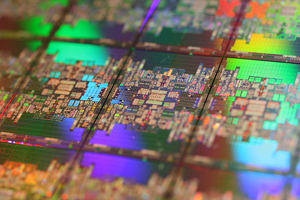

|
Researchers from both academia and industry are invited to share their latest research findings in the area of EPIC architectures and compiler technology. The EPIC style of architecture was developed to enable new levels of instruction-level parallelism not achieved with traditional architectures. By allowing the compiler to express program parallelism and other relevant information directly to the processor, EPIC architectures can overcome hardware complexity issues that limit performance in traditional microprocessors. The major challenge in realizing the full potential of EPIC architectures is developing compiler and runtime optimization technologies that effectively deploy explicitly defined hardware mechanisms, and deliver performance for both commercial and scientific applications. This workshop will focus on promising research concepts that enable the EPIC architecture model. |
KEYNOTE SPEAKER
| |||
FINAL PROGRAM
| |||
Photos from the event | |||
Topics of interest include, but are not limited to:
Compiler Optimizations:
Instruction
scheduling, software pipelining, predication,
control and data speculation, register allocation
Versioning approaches to dynamically adapt to runtime behavior
Techniques to mitigate in-order memory stalls, like prefetching and load clustering
Compiler-directed memory-hierarchy and cache-coherency management
Methods of program analysis and verification that are related to EPIC
Higher-level optimizations that are related to EPIC
Validation of compiler optimizations
Binary Translation:
Methods of binary translation applicable to EPIC architectures
Hardware support of binary translation
Feedback-Directed Optimizations:
Especially performance monitoring unit (PMU) driven optimizations
Dynamic optimizations
Microarchitecture:
Novel architectures and microarchitectures
In-order versus out-of-order designs, hybrid approaches
Multi-threaded and multi-core EPIC architectures
Power and energy aware computing techniques for EPIC machines
Advanced Uses of EPIC Architectures:
Virtualization and Secure Computing
Special purpose applications
Performance Analysis of EPIC Architectures:
Commercial and scientific workload studies for EPIC models
Effects of architectural features on workload behavior
Experimental evaluation of Itanium microprocessors
Performance comparisons with other architectures
Tools for analysis, instrumentation, and architecture experiments
Andrey Bokhanko, Intel
| Submission Deadline: | Extended to Monday, February 22, 2010 |
| Acceptances Mailed: | February 24, 2010 |
| Final Version Due: | April 2, 2010 |
| Workshop Date: | April 24, 2010 (half day workshop) |
Full papers of up to 22 pages or extended abstracts of up to 8 pages can be submitted by email (8.5"x11" double-spaced pages, using 11pt or larger font). Clearly describe the nature of the work, its significance and the current status of the research. Include a title page containing the title of the paper, list of authors and their affiliations, addresses, telephone and fax numbers, email addresses and the name of the corresponding author. Accepted papers will be published on EPIC-8 web-site (the copyright will remain with the author).
EPIC-2, 2002, Istanbul, Turkey